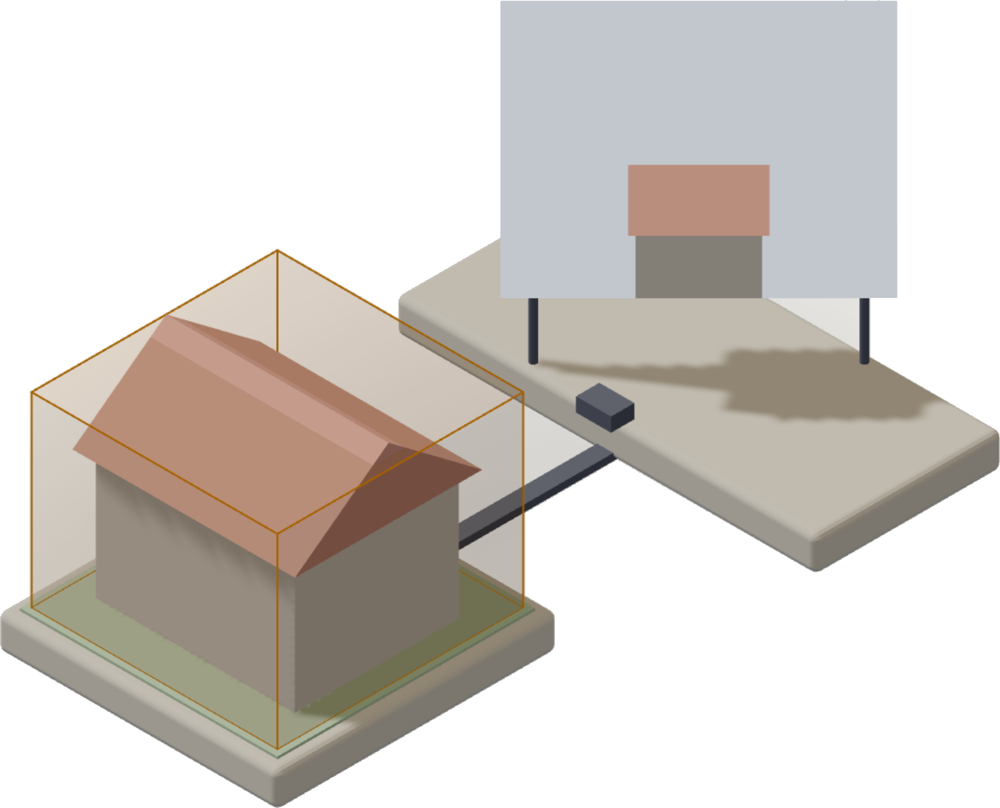
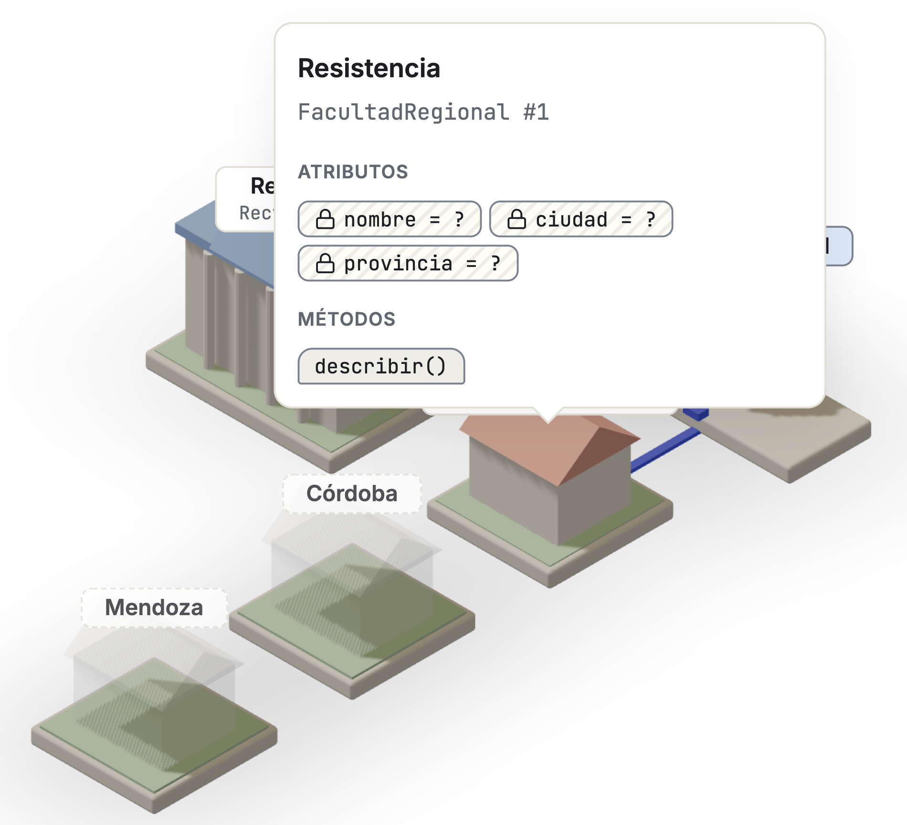
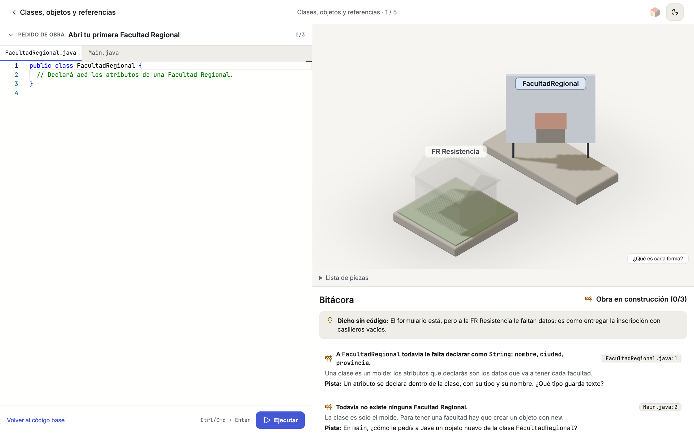

Open course · Java and OOP
You write real Java, you run it, and a 3D model shows you what your code built.

The class is the blueprint; the object, the building.
20 challenges, four modules.
Luciano Balbiano01 / 07
The problem
What a beginner lacks isn't the syntax: it's the mental model. new shows nothing, a reference shows nothing, and two variables pointing at the same object look exactly like two different objects.
All the console gives back is text about something nobody ever saw.
When the state of a program can't be seen, mistakes get memorised instead of understood.
Learn Java by Building a University02 / 07
The model

Isometric scene in Three.js: fixed orthographic camera, low-poly pieces floating with no infinite ground.
React Three Fiber03 / 07
The dictionary
| Java | In the model |
|---|---|
| class | A blueprint, in thin line |
| new | A building that grows out of its island |
| object | Serial plate: FacultadRegional #1 |
| reference | A label hanging from the building |
| composition | An attached island, joined by a small bridge |
| constructor | A crane over the island while it runs |
| == | Same serial number, same building |
A list is a row of small buildings with a railing.
Learn Java by Building a University04 / 07
The screen

Every line of feedback points at a line of yours: FacultadRegional.java:1.
Monaco · Three.js05 / 07
How it is built
The model doesn't interpret the code: it watches it run. The backend executes the program in an isolated environment and reads the state through JDI, the JVM's own debugging interface. What appears in the scene are the objects that actually existed.
Learn Java by Building a University06 / 07
Open
The 20 challenges play end to end. No signup, nothing to install.
ljbu.balbiano06.workers.dev
Open source; the course content is in Spanish. What is missing is the beta with students: if you teach OOP and want to run it with your course, get in touch.
github.com/BalbianoLuciano07 / 07